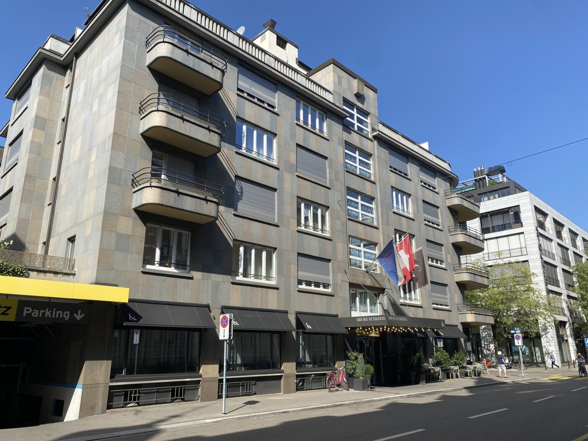
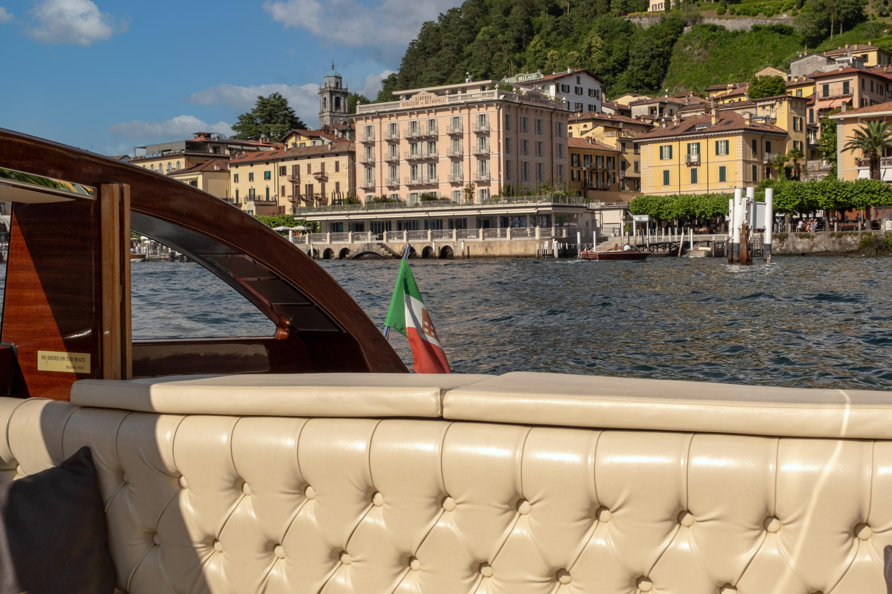
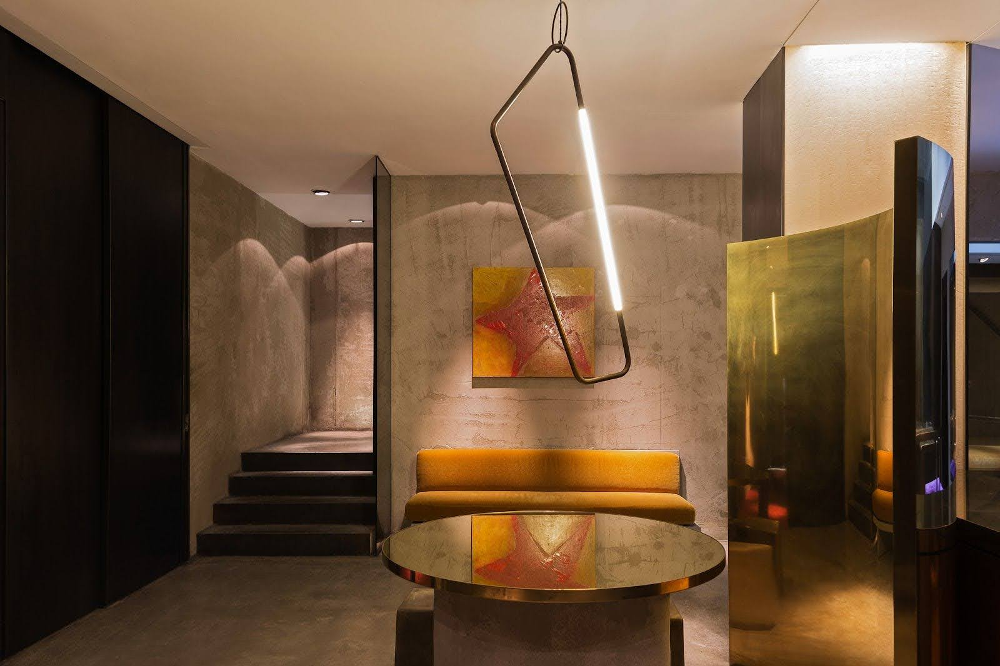

Trip Confirmed
Switzerland & Italy · April 2027
Alps toItalian Lakes
Toronto → Zurich → Swiss Alps → Bellagio → Milan → Toronto. 10 nights, one unforgettable family trip.
Switzerland & Italy · April 2027
Toronto → Zurich → Swiss Alps → Bellagio → Milan → Toronto. 10 nights, one unforgettable family trip.
North to south. Mountains to lakes to city. Perfectly paced, all trains, no backtracking.

Zurich
Easy arrival
2 nights
Swiss Alps
Mountain wow factor
3 nights
Bellagio
Penthouse on the lake
3 nights
Milan
Style & energy
2 nightsA design boutique, a mountain family-run, a lakeside penthouse, and a rooftop finale.

Neues Schloss
Autograph Collection · Design boutique
2 nights
Hotel Silberhorn
Family-run · Lauterbrunnen valley
3 nights
Splendor Penthouse
Entire Airbnb · lake views
3 nights
STRAF Milan
Design Hotels · Duomo rooftop 😎
2 nightsEvery day of the trip — click a pill to jump to that day.
Day 0 · Sat 24 Apr
Toronto → Zurich
Day 1 · Sun 25 Apr
Land, ease in, walk the lake
Day 2 · Mon 26 Apr
Full day in the city · optional Lucerne trip
Day 3 · Tue 27 Apr
Scenic train down to Lauterbrunnen
Day 4 · Wed 28 Apr
The big-day Jungfraujoch excursion
Day 5 · Thu 29 Apr
Pick your adventure · weather permitting
Day 6 · Fri 30 Apr
Scenic rail day into Italy
Day 7 · Sat 1 May
A full day exploring the postcard town
Day 8 · Sun 2 May
Villa Balbianello, boat tour, or nothing at all
Day 9 · Mon 3 May
Move to the city · check in to STRAF
Day 10 · Tue 4 May
Duomo rooftop · Galleria · rooftop sunset
Duomo rooftop walk
Book online · elevator or stairs · essential
The Last Supper (Cenacolo)
6–8 weeks in advance · timed entry
Museo del Novecento
20th c. Italian art · next to Duomo
Pinacoteca di Brera
Major art collection
La Scala tour
Opera house + museum
Fondazione Prada
Contemporary art in a distillery
Day 11 · Wed 5 May
Milan → Toronto · same-day return
The Other Options
Scotland & Northern Ireland · Chile · Dubai & Oman. All still worth doing someday.
View the archive →